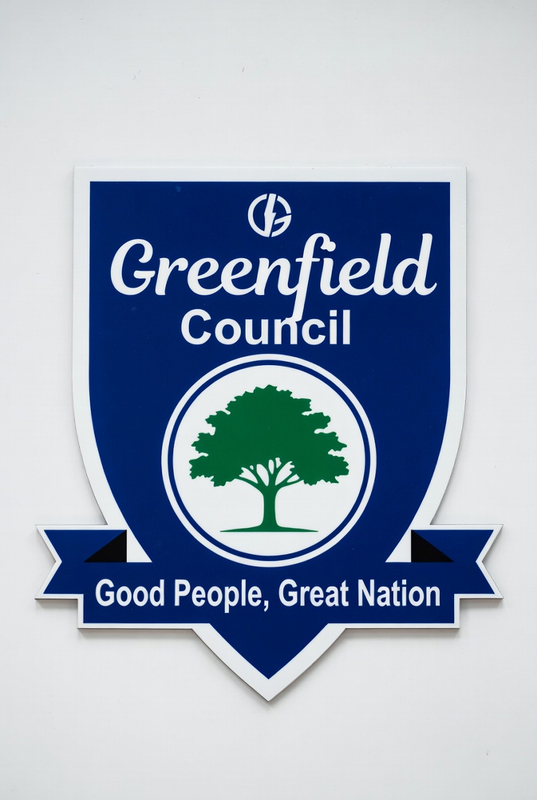

Greenfield is a progressive and community-driven local government committed to transparency, accountability, and sustainable development for all citizens.
Our council works to provide quality infrastructure, reliable public services, and inclusive governance. We believe in building a strong future through unity and responsible leadership.

Public Services Directory
Health Department
Community Health Clinics
Vaccination Programs
Maternal and Child Health Services
More About Health Services
The Health Department provides preventive healthcare, disease control programs, and emergency medical coordination.
Public Works Department
Road Construction and Maintenance
Waste Collection and Sanitation
Drainage and Flood Control
More About Public Works
Responsible for maintaining infrastructure including roads, public buildings, drainage systems, and environmental sanitation.
Education Department
Public Primary Schools
Scholarship Programs
Adult Literacy Programs
More About Education Services
Oversees public education development, teacher training, and educational support initiatives within the city.
Greenfield City Council Members
Greenfield City Council Members
S/N
Name
Ward
Position
Party
Years in office
1
Aldof King
Achara Layout East
Leader
ABC
4 years
2
Emmanuel Praise
Achara Layout West
Deputy Leader
DCA
3
3
Aliagwu Love
Akwuke
Majority Leader
ABC
4
4
Armstrong Augustine
Amechi
Minority Leader
ABC
5
5
Goodness Obi
Awkunanaw East & West
Chief Whip
DCD
3
6
Marvel Odiegwu
MaryLand
Deputy Chief Whip
DCD
3
7
Obelenwa Mmadu
Obeagu
Committee Chairman
ABC
3
8
Emeke Trust
Ugwuaji
Committee Member
DCA
4
9
Uzoma Kendra
Uwani East/West
Ordinary Councillor
ABC
3
Total Members
9
Annual Budget Summary Table
Greenfield City Council Annual Budget Summary Table
A step-by-step guide to the registration process for applicants is provided here, including required documents for Educational and Medical qualifications as well as deadlines for their submission.
This document outlines the Terms and Conditions for joining Greenfield City Council. Do endeavour to read them carefully before proceeding with your registration.
News & Media
Greenfield City Council Recognized for Environmental Leadership
Category: Government News
Posted by: Alexia Allen.
Greenfield has received a national award for excellence in environmental sustainability. The city’s initiatives, ranging from expanded recycling programs to urban tree planting, were praised for reducing emissions and enhancing resilience. Judges highlighted Greenfield’s innovative approach to community engagement, including school-based environmental education and volunteer-led clean-up drives.
"This recognition affirms our pledge to make Greenfield a model green city, and we will continue to lead with renewable energy adoption and water conservation programs for as long as we possibly can."
Ongoing projects, such as renewable energy adoption and water conservation programs, have continued to position Greenfield as a leader in environmental stewardship. The council reaffirmed its commitment to environmental stewardship as a cornerstone of city policy. Officials added that upcoming projects include solar panel installations on municipal buildings and expanded bike lanes to encourage eco-friendly transportation. It was also noted that the city is working on a comprehensive public transportation plan to further reduce traffic congestion and emissions. These efforts aim to improve the quality of life for residents and reduce environmental impact on the community of Greenfield.
New Community Health Center Launched by City Council
Category: Health & Community
Posted by: Jacques Knight.
Greenfield residents now have access to expanded healthcare services with the opening of the Greenfield Community Health Center. The facility offers primary care, maternal health, and mental wellness programs, addressing long-standing gaps in local healthcare access. At the ribbon-cutting ceremony, city leaders highlighted the center as a milestone in improving equitable healthcare. Hon. James Uzoho from the House of Representatives expressed that "Every resident deserves quality care close to home." The project was funded through a mix of municipal resources and state grants, underscoring the city’s dedication to public well-being. The center is equipped with modern diagnostic tools and staffed by a diverse team of medical professionals committed to serving the community.
A Greenfield City Council official highlighted that the center will also host educational workshops on nutrition, preventive care, and mental health awareness, further strengthening Greenfield’s public health infrastructure. This center is a milestone in Greenfield’s commitment to equitable healthcare for all residents, and it is expected to significantly improve health outcomes in the community. The council plans to monitor the center’s impact and explore opportunities for additional healthcare services in the future. The City Council President, Mrs. Amara Okafor, emphasized that this center is a testament to the council's commitment to public health and well-being. She also noted that the center's success would be measured by community feedback and health outcomes over time, and encouraged continued community involvement in the center's operations.
Greenfield has implemented a new smart traffic management system aimed at reducing congestion and improving road safety. The system uses real-time data from sensors and cameras powered by AI to optimize traffic flow and provide drivers with up-to-date information on road conditions. These smart traffic systems ease congestion and ultimately improve road safety. City officials stated that the system is expected to reduce delays by 20% and decrease traffic-related accidents by 15%. The initiative is part of Greenfield's broader efforts to enhance urban mobility and promote sustainable transportation options. Residents are encouraged to download the accompanying mobile app for real-time traffic updates and route suggestions.
“We expect to see a 20% reduction in travel delays within the first year. This technology will provide valuable data for future infrastructure planning.”
This traffic management system is part of Greenfield’s broader strategy to modernize urban mobility. Officials added that the system will be integrated with public transit schedules, making commuting more efficient and reliable for residents. The AI sensors of the traffic management system are designed to optimize traffic flow, reduce commute times, and improve pedestrian safety across busy intersections. This development represents a significant step forward in Greenfield's commitment to smart city infrastructure and has proven to be effective in improving urban mobility.
Category: Housing & Community Development
Posted by: David Eze.
Greenfield City Council has announced an expansion of the affordable housing program, aiming to provide more low-income families with access to safe and affordable housing. The program will offer subsidies and rent assistance to qualifying residents. The affordable housing program expansion is part of Greenfield's broader efforts to address housing insecurity and promote social equity. Officials noted that the program will prioritize families with children, seniors, and individuals with disabilities. The council is committed to monitoring the program's impact and making adjustments as needed to ensure it effectively meets the needs of the community. This initiative reflects Greenfield's dedication to creating a more inclusive and equitable city for all residents. Councilwoman Maria Okonkwo emphasized the importance of ensuring that all residents have access to decent housing. She pointed out that this expansion is a step towards achieving Greenfield's goal of inclusive urban development.
"Housing affordability is central to our city’s development strategy. By expanding options, we are strengthening neighborhoods and fostering economic stability."
The expansion includes the construction of new affordable housing units and the renovation of existing properties to meet safety and quality standards. The council is also partnering with local non-profits to provide support services for residents, including job training and financial counseling. This initiative is expected to significantly increase the availability of affordable housing in Greenfield and improve the quality of life for many residents. This initiative builds on Greenfield’s long-term vision for equitable urban development. Officials noted that the program will also include supportive services such as financial counseling and tenant assistance, helping residents transition into stable housing.
Greenfield City Council has approved the 2026 budget priorities and has adopted the 2026 municipal budget, directing significant funds toward infrastructure improvements, public safety enhancements, and community development projects. The budget allocates funds for road repairs, new public parks, and upgrades to municipal facilities. Council members emphasized the importance of balancing fiscal responsibility with community needs. The approved budget reflects the council's commitment to sustainable growth and improved quality of life for all residents. In addition, funds have been earmarked for upgrading public parks and modernizing city facilities to better serve residents. The council emphasized that community feedback from public hearings played a central role in shaping the priorities and noted that the budget is designed to balance fiscal responsibility with long-term growth, ensuring Greenfield remains a safe, vibrant, and environmentally responsible city.
The budget also includes provisions for expanding affordable housing initiatives and supporting local businesses through targeted grants and incentives. These measures are intended to stimulate economic growth while maintaining Greenfield's character and livability. The council plans to review progress on these initiatives quarterly to ensure accountability and transparency in fund usage. The council also committed to maintaining open communication with residents through regular updates and community forums on the council's public portal. The budget is expected to be fully implemented by the end of 2026, with any other necessary input cross-checked before the due implementation date.